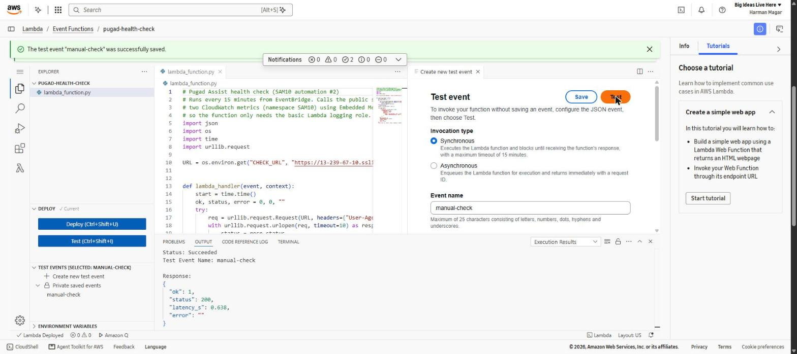
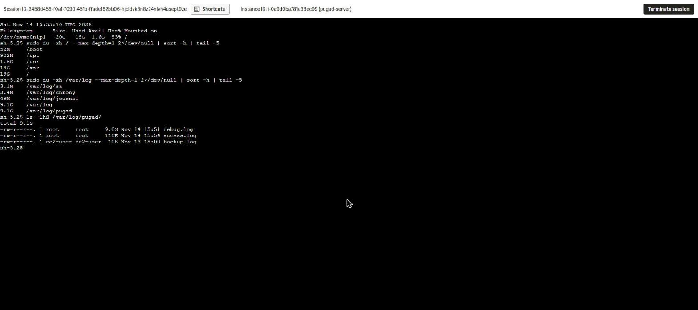

Section 7
Automation and the incident
Automation 1 — nightly backup
What: systemd timer pugad-backup.timer runs pugad-backup.service → scripts/backup.sh every day at
18:00:00 UTC (02:00 Manila), with Persistent=true so a missed run happens at next boot.
Proof it runs on its own — "backup ok" lines in CloudWatch Logs: E-15b
- 20261111T180004Z backup ok
- 20261112T180004Z backup ok
- 20261113T180004Z backup ok
- 20261114T160442Z backup ok (started by hand for the restore test)
- 20261114T180004Z backup ok

Automation 2 — health check every 15 minutes
What: Lambda pugad-health-check, triggered by EventBridge Scheduler pugad-health-check-every-15m
(rate(15 minutes)), calls https://13-239-67-10.sslip.io/api/config from outside the server and writes two metrics,
HealthCheckOK and HealthCheckLatency. Alarm pugad-site-down fires if it is not OK.
Code: infra/health-check/lambda_function.py. E-09b
First test: status 200, ok 1, latency 0.638 s. E-09
Proof it runs on its own — consecutive runs exactly 15 minutes apart, all OK: E-15a
- HealthCheckOK 1 · status 200
- HealthCheckOK 1 · status 200
- HealthCheckOK 1 · status 200
- HealthCheckOK 1 · status 200
- HealthCheckOK 1 · status 200
- through — 100 runs matched the query (40 shown, all OK)



The incident: disk full (staged), 14 Nov 2026
We broke the server on purpose to prove the alarm, the runbook and the fix all work. All times UTC.
- Fault starts:
/var/log/pugad/debug.logbegins growing with no size limit. - Disk at 73%. E-12a
- Disk at 88% — over the 85% alarm line.
- Peak: 93% (19 G of 20 G used).
- Alarm email from
pugad-disk-filling, datapoint 87.2%. - Root cause found by following the biggest folder:
/19G →/var14G →/var/log/pugad9.1G →debug.log9.0G. E-12b - Fixed:
rm /var/log/pugad/debug.log; disk back to 48%. - Prevention in place: logrotate rule + hourly timer, dry run clean. E-12c
Disk used on pugad-server, 14 Nov 2026 (UTC)
Before the fix: climbing to 93%. After the fix: 48%. Hover a point for details. Source E-12aE-12b
Show as a table
| Time | Disk used | Note |
|---|---|---|
| 15:47 | 73% | before the fault was pushed further |
| 15:48 | 78% | |
| 15:49 | 83% | |
| 15:50 | 88% | crossed the 85% alarm line |
| 15:51 | 93% | peak |
| 15:55:10 | 93% | root cause found (du trail) |
| 15:55:44 | 48% | debug.log deleted, disk back to 48% |
| Root cause | A debug log in /var/log/pugad had no size limit and no rotation |
| Time to detect | ~4 min after crossing 85% (the alarm uses a 5-minute average) |
| Time to fix after the alarm | ~2 min |
| Fix | Deleted the runaway file; checked the site still answered |
| Prevention | /etc/logrotate.d/pugad: daily, maxsize 100M, keep 7, compress; logrotate timer changed from daily to hourly so the size check runs often |
| Lesson | On XFS, fallocate reserves the whole new size, so the fill had to be done in 1 GB chunks; freed space shows a few seconds after rm |



Runbook
The step-by-step runbook we followed: confirm (df -h /) → find what is big (du from the top down) →
fix (delete or truncate the runaway file; restart a container if space does not come back) → check the service → prevent.
It lists the usual suspects and what is never safe to delete (the MongoDB data volume and .env).
Full text: docs/runbook-disk-full.md.